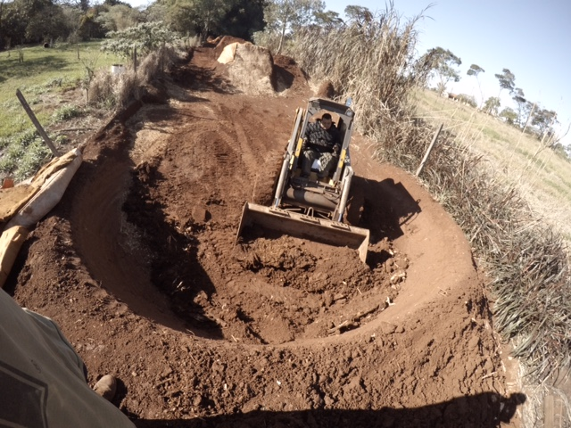
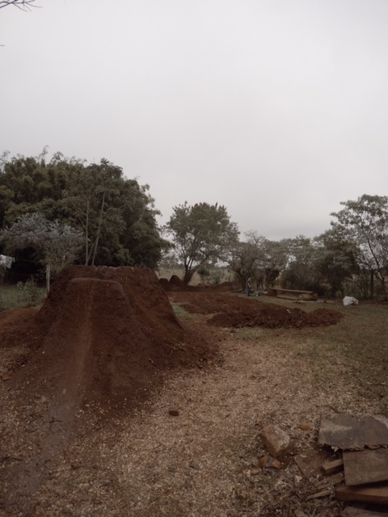
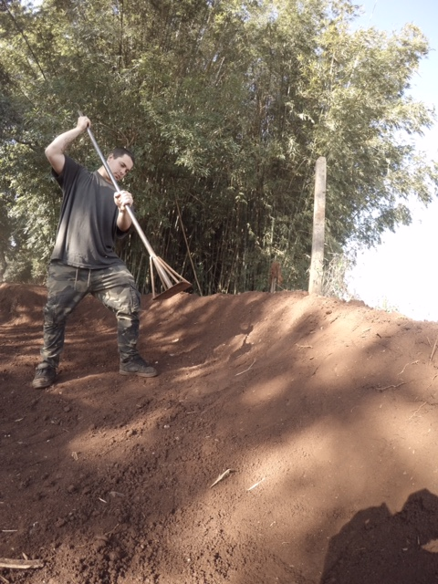
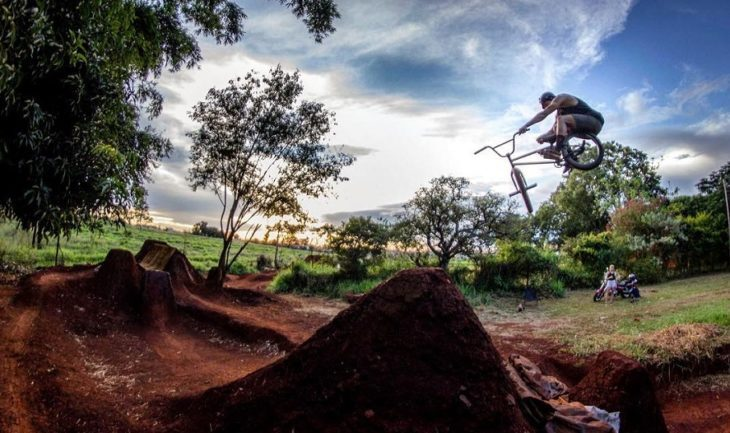
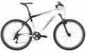
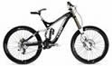
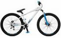

La pista Dirt esta cumplido, menciono Christian Feltan creador del unico circuito para los bikers de la provincia
La pista de BMX Dirt Jump cada dia es mas grande y con mejores saltos. En los ultimos dias, los bikers de Posadas intensificaron trabajos para que el circuito pueda tener saltos mas grandes y seguros.
El dirt jump es una de las modalidades del BMX. Consiste en efectuar saltos con bicicletas de Mountain Bike especialmente preparadas. Pero no solo se trata de impulsarse y saltar, sino de hacer figuras acrobaticas en el aire. Para eso, es necesario una pista y la unica que existe esta ubicada en el barrio Itaembe Mini de la capital provincial.
El sabado, los deportistas tuvieron una excelente noticia, luego de gestionar y gestionar pudieron conseguir una maquina mini cargadora para poder realizar modificaciones en el circuito, modificaciones que venian deseandolo desde hace mucho tiempo.

Hicimos modificaciones que fueron planificadas, se hicieron esperar mucho porque no teniamos maquina. Lo que hicimos fue remover mucha tierra, agradecemos a la Empresa Carlos Enriquez que nos mando una maquina para trabajar todo el dia, dijo Christian Feltan, reconocido biker de la provincia,
Mejoramos y ampliamos mucho los saltos. Tambien aprovechamos para mejorar el circuito de que utilizaran los mas chicos, esta quedando perfecta, menciono Feltan.

Segun conto Feltan, actualmente hay cincos saltos grandes, que fueron ampliados y en los proximos dias estara lista para los entrenamientos de los bikers de la provincia.
Para futuro estamos estamos pensando ajustar los detalles y poder concretar el sexto dirt, el salto mas grande de la pista, eso sera el final de la pista de los saltos grandes. Pero con paciencia y trabajo, revelo el amante de la BMX
Esta pista salio con la idea de que sea para entrenamiento, pasaron los anos y esta pista tiene un andar para los profesionales. Esto esta disenado para que cuando se habilite todo se pueda realizar competencias nacionales y hasta internacionales, en Argentina hay pocas pistas asi.

Circuito terminado

Tipos de bicis en MTB
Dentro del mountain bike de competicion, se distinguen las siguientes especialidades principales:
Rally o Cross Country (XC)
Competiciones por terreno ascendente y descendente. Suelen disputarse en circuitos de 7-10 km de longitud a los que se efectúan varias vueltas o circuitos de mayor longitud con partida y llegada (sin vueltas). Todos los corredores parten al mismo tiempo. Aquí las pulsaciones medias suelen ser entre 170-180 ppm.

Descenso o Downhill (DH)
Recorrido cuesta abajo de dificultad tecnica media o alta en el que los corredores luchan contra el cronometro de manera individual, efectuandose el remonte por medios mecanicos telesillas o camiones

Big air
Consiste en saltar rampas muy altas llegando hasta los 10 metros y mas de altura en el salto y hacer trucos en el aire.
Salvo raras excepciones, se usan las mismas bikes que para dirt.
Cada una de estas especialidades han dado lugar a distintas tipologías de bicicleta. Asi, en rally se utilizan bicicletas habitualmente sin suspension trasera, con suspensión delantera de poco recorrido y muy ligeras en muchos casos por debajo de 10 kg. En el otro extremo, las bicicletas de descenso usan cuadros muy reforzados y pesados, sistemas de suspensión trasera y delantera de largo recorrido, ruedas gruesas y pesadas, etc., lo que da lugar a bicis que rondan los 20 kg.
Dirt Jump
Circuito de saltos de tierra. Consiste en ir saltando y haciendo trucos o acrobacias en el aire.
Se pueden usar las mismas bicicletas que para 4x

Megavalanche o Downhill Maratón y Freeride (FR)
Descenso de larga duracion, generalmente más de 10 km. Se suelen emplear bicicletas de doble suspensión pero mas ligeras debido a la importancia que cobra el pedaleo. Además, las pruebas avalancha se diferencian de las de descenso porque todos los participantes salen al mismo tiempo, como una estampida. La suspension trasera es de menor recorrido que las de DH